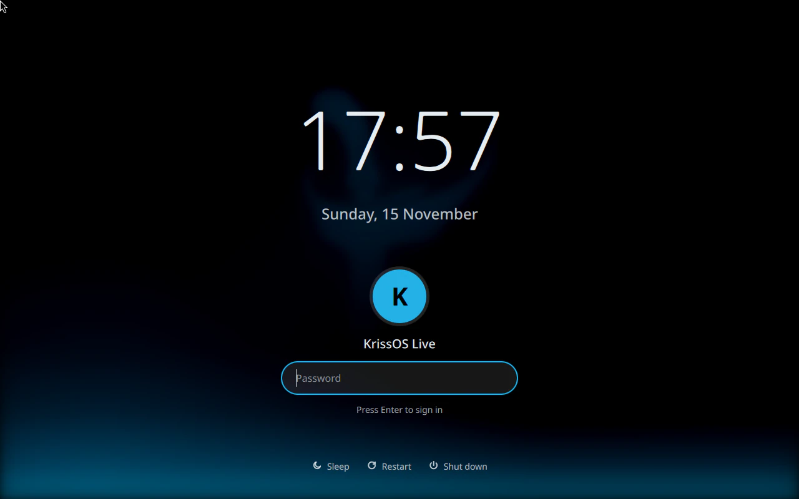
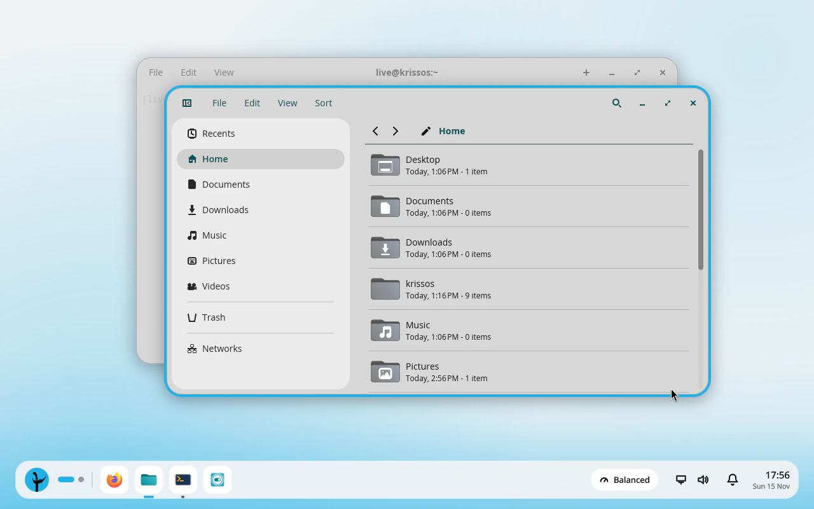

Satu bar.
Semua dekat ja.
Ni la desktop default KrissOS: taskbar, launcher, notifikasi, quick settings, lock screen. Shortcut Windows anda? Terus jalan, tak payah belajar balik.

Semua gambar kat sini screenshot betul, shell jalan dalam VM. Takde edit-edit, takde Photoshop.
Satu bar kat bawah.
Butang launcher, app yang dipin dan yang tengah buka, mod power, tray, volume, notifikasi dan jam. Nak pin app? Klik kanan. Nak susun? Seret ja.

Tekan Windows, terus taip.
Taip sikit, app dan action terus keluar ikut apa yang anda cari. Anak panah untuk gerak, Enter untuk buka. Kekunci Menu atau Shift+F10 buka menu app tu.

Bertindan, bukan bersepah.
Notifikasi baru bertindan atas bar, yang paling baru kat atas, yang lain menyorok belakang. Loceng kira berapa banyak. Tengah fokus? On Do not disturb, semua kena tunggu dulu.

Windows+A, semua suis kat sini.
Panel naik dari bar: Do not disturb, mod gelap atau cerah, mod power, volume siap pilih output (speaker ke headphone). Dah siap? Seret bawah atau tekan Escape.

Muka sama, dua kali.
Lock screen terus boleh taip password, tak payah klik dulu. Skrin login pun sama rupa: user lain kat bawah kiri, pilih desktop kat bawah kanan.


Gelap atau cerah, ikut suka.
Tukar dalam quick settings. Bar, panel, wallpaper semua ikut sekali. Sky Cyan tetap setia.


Geng Mac?
Layout Mac pilihan tengah on the way: bar atas, dock tengah, butang tetingkap kat kiri. Rupa tetap KrissOS.
Kekunci yang anda dah hafal.
Diset masa login pertama. Kekunci yang anda dah ubah, kami tak kacau.
- WindowsBuka launcher
- Windows+LLock screen
- Windows+AQuick settings
- Windows+NNotifikasi
- Windows+DTunjuk desktop; tekan lagi, tetingkap balik semula
- Windows+EFile
- Windows+← / Windows+→Snap tetingkap ke kiri atau kanan
- Windows+↑ / Windows+↓Maximize atau minimize
- Windows+1…9Lompat ke workspace tu
- Print ScreenScreenshot satu skrin, terus masuk Pictures dan clipboard
- Windows+Shift+SScreenshot kawasan yang anda pilih
- Alt+Tab / Alt+F4Tukar tetingkap, tutup tetingkap
Cuba dalam VM malam ni.
Live ISO terus masuk KrissOS Shell. Tak minat animasi? Off ja dalam settings, semua jadi laju terus.